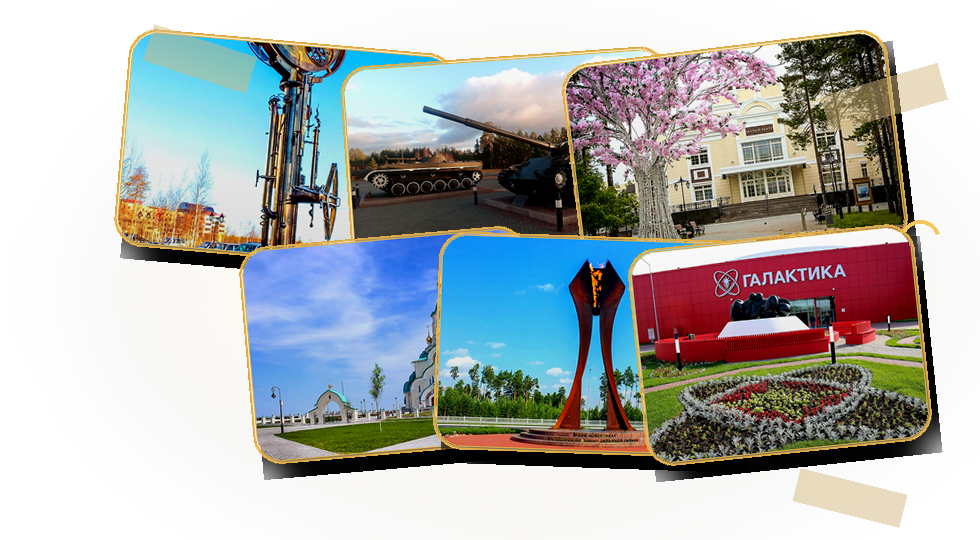

Городской путеводитель
Что посмотреть в Когалыме
Маршрут по характеру северного города
Когалым — северный город с нефтяным характером и живой городской памятью. Здесь история освоения Западной Сибири соседствует с парками, скверами, культурными центрами, храмами и местами для спокойных прогулок.
Этот раздел — не сухой список точек. Это быстрый путеводитель по объектам, через которые читается город: от памятников первопроходцам до новых общественных пространств.

Любимый город
с северным характером
По этому запросу ничего не найдено.